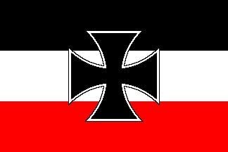
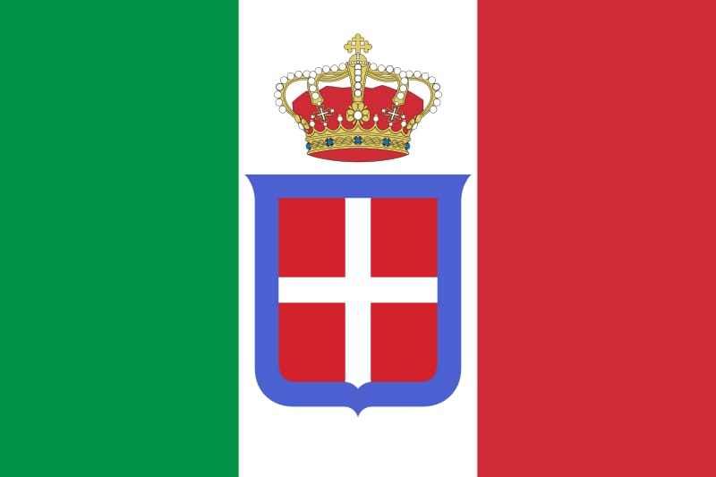
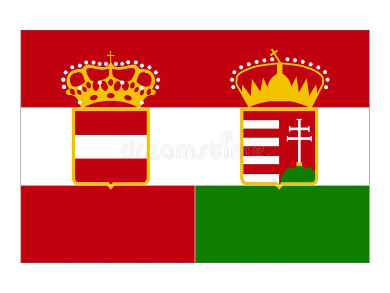
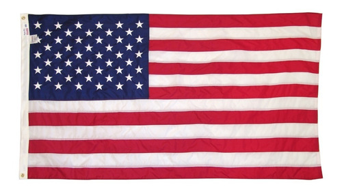
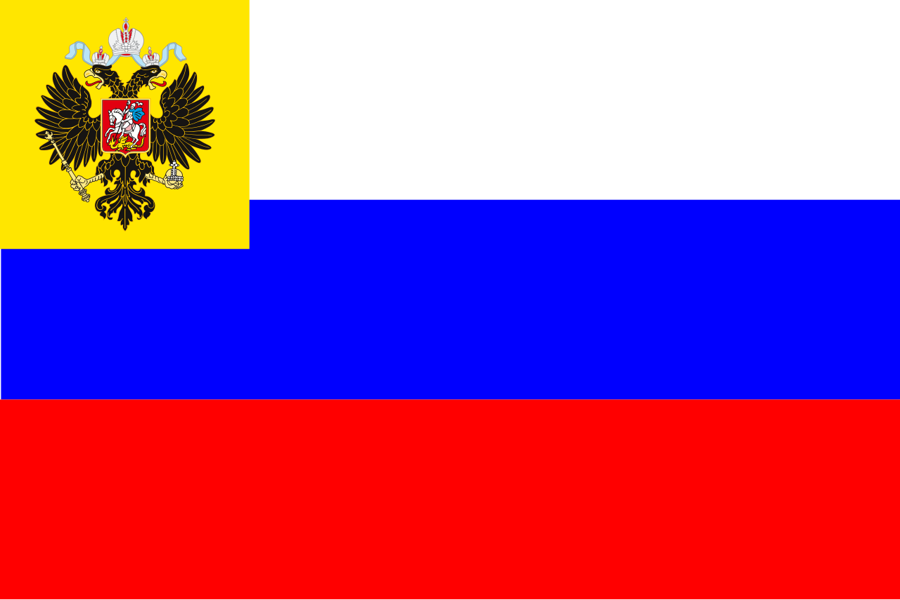

Tríplice Aliança:

Alemanha
A Primeira Guerra Mundial foi o primeiro conflito que acabou se notabilizando o desenvolvimento bélico e armamentista da Alemanha, o que acabou lhe dando o status de “grande potência”. Mas se os alemães eram considerados uma potência militar, porque perderam o conflito e como os territórios que foram anexados ao então Império Alemão foram distribuídos aos vencedores do conflito através do humilhante Tratado de Versalhes. Para entendermos tudo isso, temos que entender o que foi o conflito que perdurou de 1914 á 1918. A Primeira Guerra Mundial foi um conflito entre duas alianças opostas: a Tríplice Aliança ( composta por Alemanha , Áustria-Hungria e a Itália) e a Tríplice Entente ( composta por Reino Unido, França e Rússia), que durou de 1914 a 1918, que não só atingiu o continente europeu mas outros continentes também. Segundo os historiadores o estopim para conflito foi a morte do arquiduque da Áustria-Hungria, Francisco Ferdinando e a práticas de políticas imperialistas entre o Império Alemão, Império Otomano, o Império Russo, a Itália e a França, que acabou redesenhando o mapa europeu no cenário internacional.

Itália
O termo Campanha Italiana refere-se à série de batalhas nas quais se confrontaram os exércitos do Império Áustro-Húngaro e do Reino de Itália, ao lado de seu aliados, no norte da Itália entre 1915 e 1918. O reino italiano esperava que juntando-se à Tríplice Entente contra os Impérios Centrais iria ganhar a Trento (também conhecida como Trentino) e o porto de Trieste, assim como as províncias de Bolzano-Bozen, Ístria e Dalmácia. Apesar das expectativas italianas de começar a guerra com uma ofensiva surpresa em território austríaco, que capturaria rapidamente várias cidades, as forças austro-húngaras conseguiram conter a invasão, e logo a Frente Alpina transformou em uma guerra de trincheiras, a semelhança da Frente Ocidental a qual nenhum lado conseguiu romper entre 1915 ou 1916. Em 1917 um ataque conjunto Austro-alemão em Caporetto infligiu uma massiva derrota à Itália mas que as Potências Centrais foram incapazes de capitalizar para nocautear a Itália, que por sua vez se recuperou bem. A Itália emerge vitoriosa na batalha final de Vittorio Veneto enquanto a Áustria-Hungria colapsa.

Império Austro-Húngaro
A escalada dos conflitos entre os dois blocos formados pelo sistema de alianças europeu levava a Europa inteira a uma crise sem precedentes. O fator de desencadeamento para o início dos conflitos armados foi o assassinato do herdeiro do trono da Áustria-Hungria, Francisco Fernando e sua esposa Sofia, foram mortos em Sarajevo, na província da Bósnia, no dia 28 de junho de 1914 por um ativista sérvio, chamado Gavrilo Princip. O Estado austro-húngaro enviou um ultimato à Sérvia, que não o aceitou na íntegra, e a partir de então o sistema de alianças entrou em funcionamento. Quando a Áustria-Hungria declarou guerra à Sérvia, a Rússia interveio e colocou seu apoio à nação eslava. Com o apoio russo de um lado, a Alemanha foi arrastada para o conflito, de acordo com o compromisso firmado pela Tríplice Aliança. A França, aliada à Rússia através da Tríplice Entente, também entrou no conflito contra a Alemanha e o Império Austro-húngaro. A partir daí, mais nações se colocaram de cada um dos lados, e o mundo entrou em guerra. O General Franz Conrad von Hötzendorf era o chefe do Estado-maior da Áustria-Hungria durante a guerra, e sob seu comando as tropas austro-húngaras se envolveram em muitas das frentes da Primeira Grande Guerra.Tríplice Entente:

Estados Unidos
Em 1914, o estouro da Primeira Guerra Mundial determinou o consumo de uma tensão que se desenvolvia entre as nações da Europa desde o século XIX. Antes da guerra, os Estados Unidos defendiam a política de “portas abertas” como a melhor solução para a forte concorrência imperialista. Nesse âmbito, as autoridades do governo dos EUA acreditavam que todos os imperialistas tinham direitos iguais na exploração dos territórios afro-asiáticos. Tais projeções mudariam de rumo no ano de 1917. Naquele ano, os russos abandonaram a Tríplice Entente com o desenvolvimento da Revolução Russa. Para as potências centrais, essa seria a oportunidade ideal para vencer o conflito. Não por acaso, os alemães puseram em ação um ousado plano de atacar as embarcações que fornecessem mantimentos e armas para a Inglaterra.Nesse contexto, navios norte-americanos foram alvejados pelos submarinos da Alemanha.

Rússia
Após o assassinato do arquiduque Francisco Ferdinando, o império austro-húngaro declara guerra à Sérvia, mas esta tinha uma aliança com a Rússia que, por sua vez, declara guerra ao império austro-húng. Como desde o século XIX havia uma forte política de alianças entre as principais nações europeias, o que se segue são seguidas declarações de guerra entre estas até que o conflito atinja aquela propor. Embora a Rússia tenha entrado na guerra, sua situação interna não era das mais favoráveis: constantes crises de fome,superexploração dos trabalhadores (urbanos e rurais), assim como movimentos que como movimentos que contestavam o poder do czar. Nos campos de batalha a situação dos combatentes russos não era melhor, pois os soldados eram obrigados a racionar munição e sofriam com a superioridade bélica dos inimigos – a Rússia não tinha condições financeiras para manter seus soldados na guerra.França
Frente Ocidental foi o teatro de operações inicial da Primeira Guerra Mundial. Foi aberta em 1914, quando o Exército Imperial Alemão invadiu Luxemburgo e Bélgica, ganhando então controle militar de importantes regiões industriais no nordeste da França. A maré do avanço sofreu uma reviravolta dramática com a Primeira batalha do Marne. Ambos os lados então cavaram longitudinalmente uma linha sinuosa de trincheiras fortificadas, estendendo-se desde o Mar do Norte até a fronteira da Suíça com a França. Essa linha permaneceu essencialmente sem mudanças durante a maior parte da guerra. Entre 1915 e 1917 ocorreram grandes ofensivas ao longo da frente. Os ataques empregaram enormes bombardeios de artilharia e grandes avanços de infantaria. Entretanto, uma combinação de entrincheiramentos, ninhos de metralhadoras, arame farpado e artilharia repetidamente infligiram severas baixas nas forças agressoras e nas forças defensivas contra-atacantes. Como consequência, nenhum avanço significativo foi feito.